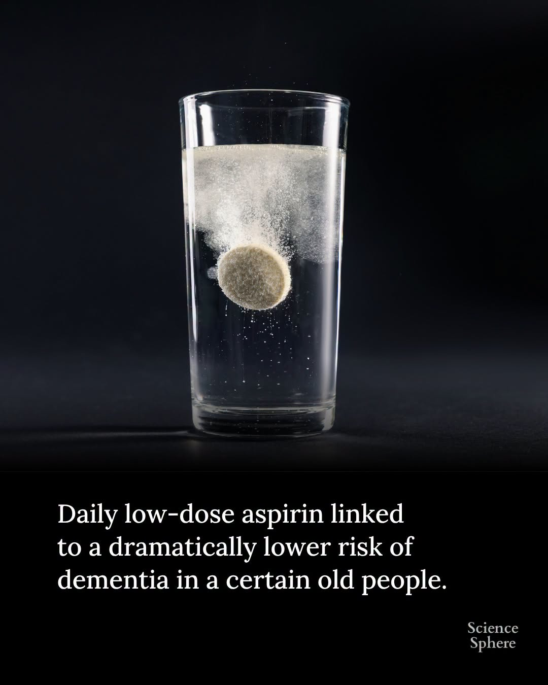

ASPREE sub-analysis: aspirin tied to ~70% lower dementia in a platelet-genetics subgroup
A genetic analysis of 13,541 ASPREE participants found aspirin did not prevent dementia overall, but in the top 20% of a platelet-count genetic score dementia occurred in about 1% on aspirin versus 3.3% on placebo. Major bleeding was more than twice as common in this subgroup, so the post cautions against starting aspirin for dementia prevention.